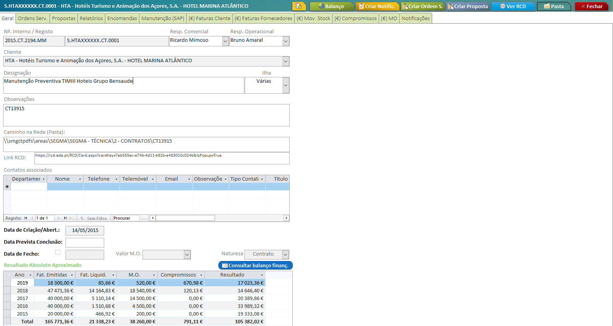
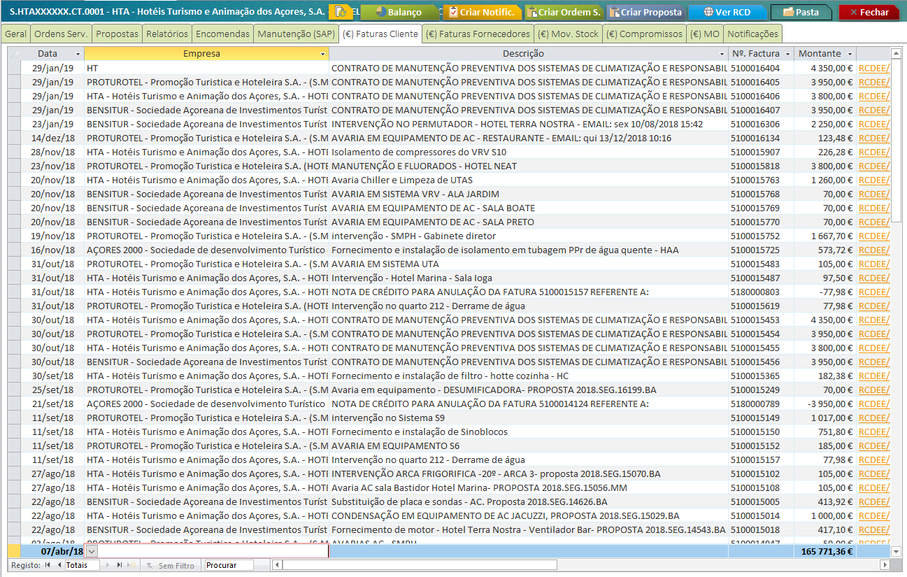
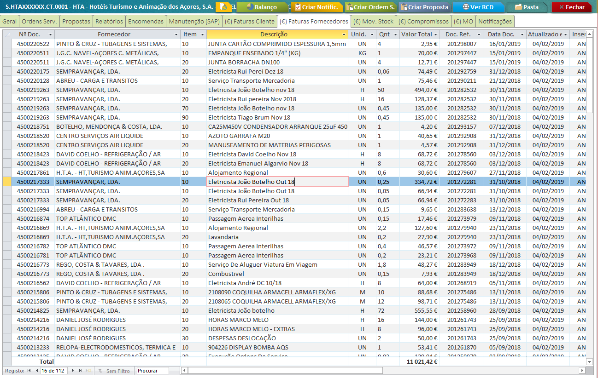
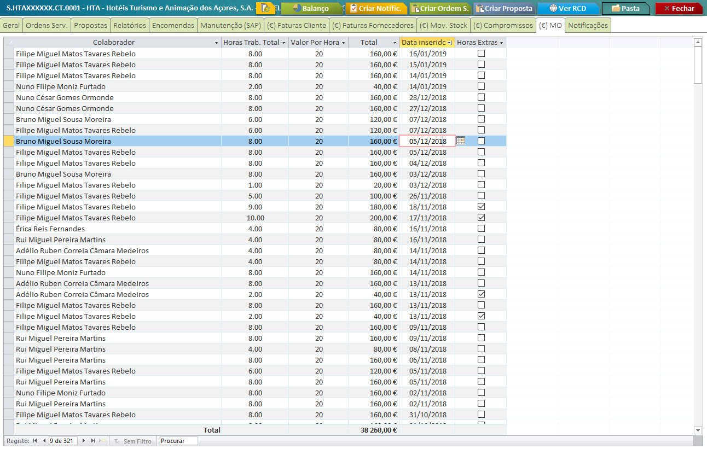
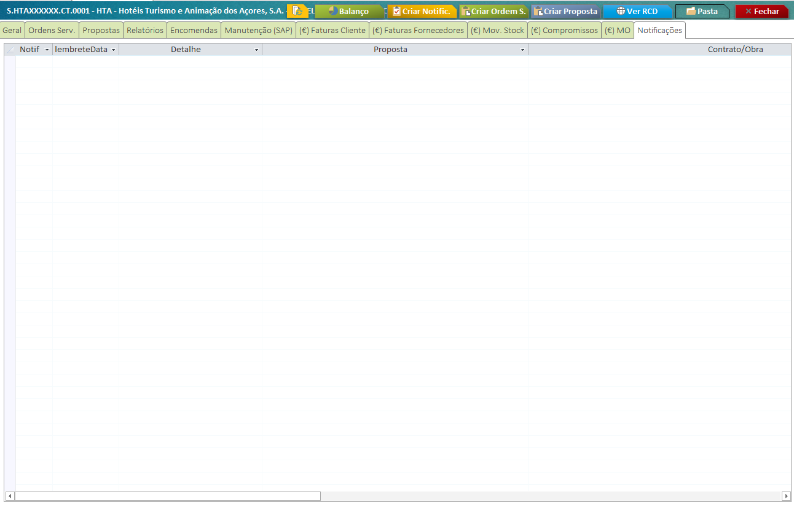

Obras/Contratos¶
Tabela de Conteudos
Esta secção têm como objetivo explicar o formulário de Obras/Contratos da base de dados, bem como informar acerca das suas funcionalidades.
Formulário Obra¶
O formulário da Obra/Contrato agrega toda a informação que seja imputada a um registo, seja hiperligações para pastas, RCD ou criação de Propostas e/ou Ordens de Serviço.
Nota
A partir da versão 7.00 da base de dados técnica, tornou-se possível a criação de um registo de Obra por qualquer utilizador.
Importante
Todo o registo de Obra/Contrato está diretamente associado com um registo em SAP, para alocação de custos e proveitos.
A criação do registo em SAP é da responsabilidade do departamento de Suporte. Até criação do registo em SAP, a obra ficará temporariamente identificada como Por Classificar.
Ordens Serviço¶
Através do separador Ordens Serv. é possível visualizar todas as OS’s associadas a este registo.
Propostas¶
Através do separador Propostas é possível visualizar todas as Propostas associadas a este registo, sejam através do intermédio de uma Ordem de Serviço ou selecão do registo diretamente na Proposta.

Relatórios¶
Através do separador Relatórios é possível visualizar todas os relatórios técnicos associados a este registo, que tenham sido realizados na base de dados.
Encomendas¶
Através do separador Encomendas é possível visualizar todas as encomendas efetuadas para este registo, sejam através de SAP ou Access.

Nota
Qualquer encomenda que seja efetuada para a Obra, a mesma estará vísivel neste separador, independentemente de ter sido criada em Access ou SAP.
Se clicar na coluna P. Compra poderá consultar todos os itens encomendados de forma discriminada.
Importante
A atualização de todos os registos de SAP para Acccess é realizado de forma manual e tipicamente no fím de cada dia útil.
Manutenção (SAP)¶
Neste separador poderá consultar todos os registos existentes em SAP, associados ao Contrato.

Importante
Qualquer alteração necessária terá de ser efetuada exclusivamente em SAP.
Resultados Financeiros¶
Esta secção pretende explicar como é consultada toda a informação relativa com custos e proveitos da Obra/Contrato.
Faturas Clientes¶
Esta secção mostra todas as faturas que foram, ou vão, ser faturadas ao Cliente, bem como notas de crédito.
Importante
Se o campo Data e Nº Fatura estiverem em branco, significa que a fatura ainda não foi enviada para o Cliente.
Faturas Fornecedores¶
Esta secção mostra todas as fatura de Fornecedores. Sendo que cada linha corresponde a um item, já faturado, do pedido de compra enviado ao Fornecedor.
Nota
Todas as linhas aqui apresentadas significa que o item já foi rececionado.
Movimentos Stock¶
No separador Mov. Stock é apresentado todo o movimento de stocks entre o armazém e a obra.
Compromissos¶
No separador Compromissos são mostrados todos os itens, de Pedidos de Compra, que foram realizados para a Obra mas ainda não foram rececionados/faturados.
Mão de Obra¶
Atravês desta secção é possível visualizar toda a mão de obra imputada à Obra.
Notificações¶
O separador Notificações pretende agrupar todas as notas, criadas pelos utilizadores, associadas à Obra.
Estas notificações têm como principal objetivo reunir a informação para renovação de contrato ou outras informações necessárias.
